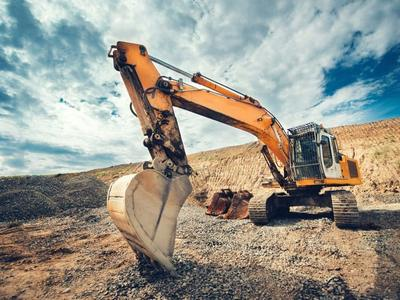
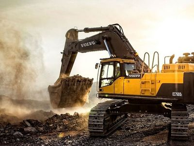
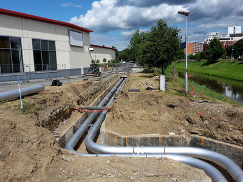
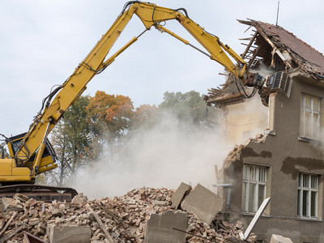
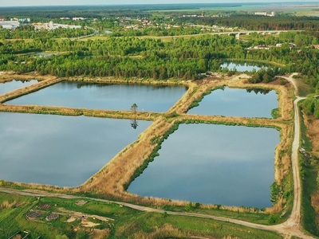

Discover Our Full Range of Services
-
1. Site Preparation and Land Clearing
 -
2. Earthmoving and Grading
 -
3. Trenching and Installation of Utilities
 -
4. Demolition and Debris Removal
 -
5. Pond and Retention Basin Construction
